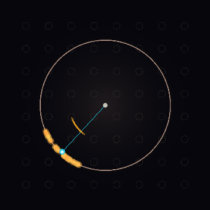

An 8×8 array of gold ring resonators, each spinning a surface plasmon at its own pace. Drive the coupling past a threshold and the rings spontaneously find one phase — order from purely local rules.
Each gold ring is a phase oscillator (a circulating surface plasmon) with its own natural frequency. Nearest-neighbor coupling tugs neighbors into step. Start at low K and the array is incoherent; hit DRIVE TO SYNC and the order parameter R climbs as the rings phase-lock into one collective coherence. The synchronization is computed from the coupling — it self-organizes; it is not scripted.
Before minting anything, the architecture was tested: an 8×8 lattice of phase oscillators with a spread of natural frequencies and nearest-neighbor coupling only. As the coupling K rises, the order parameter R = |⟨e^{iθ}⟩| shows a clean synchronization transition — incoherent below the critical coupling, collectively locked above it. No global instruction; each ring sees only its four neighbors.
The signature of emergence: global coherence that no ring was told to produce, arising only from local interaction. Coupled plasmonic resonators genuinely do this — so this one clears the bar.
Because the emergence is real, the processor carries an ACI with the full DLW tag.

Sixty-four gold ring resonators, each spinning a surface plasmon at its own pace, that find one phase together. The answer isn't in any one ring — it's in whether, and how strongly, they agree.
verdict — the synchronization self-organizes from nearest-neighbor coupling alone, and the transition is real (verified). Genuine emergence — collective coherence, not cognition.
The five working builds this processor distilled — the Fortress & Moat / Plasmatronic continuity lineage (visual sims):
the continuity core readout
open →the ring registers, control plane, fences
open →Hamilton counter · phase & shadow registers
open →the proof-of-work moat
open →field coherence · gravity tensor · witness pair
open →Emergence here = synchronization (collective phase-lock), not cognition. Plasmonics is real, fast (terahertz), and sub-wavelength — but lossy; a scaled plasmonic processor is a concept, and this is a simulation of its coupled-oscillator dynamics, not a fabricated, benchmarked device. The emergence is genuine and verified; the modesty is the point.
{kind=link}